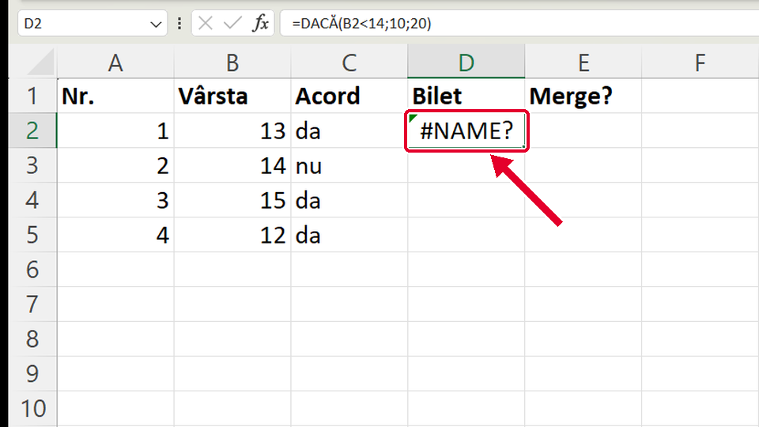
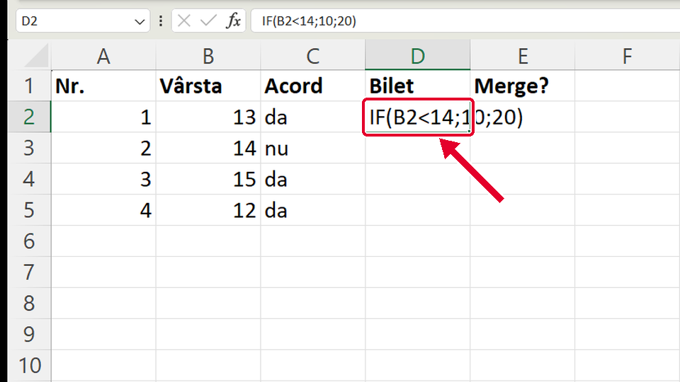
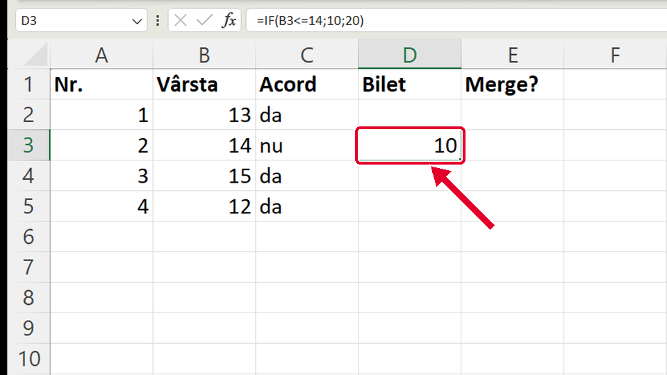

Început
Funcția IF: o decizie într-o celulă
Taste: Spațiu = pauză / continuă · ← și → = pasul anterior / următor · cu Tab ajungi la „Rulează singur”; acolo Spațiu îl pornește sau îl oprește. Poți apăsa și pe film.

Legat de asta
Se deschid într-o filă nouă, ca să nu pierzi filmul de aici.
- ApoiFuncția IF cu text: ghilimelele drepte ↗
IF poate arăta și un text, ca merge sau nu merge: textul stă între ghilimele drepte.
- ÎnainteCum scrii o formulă ↗
Ce este o formulă: începe cu semnul =, apoi celulele și operația, iar Enter o termină.
- ÎnainteMedia cu funcția AVERAGE ↗
Altă funcție scrisă la fel: numele, paranteza, ce pui înăuntru, paranteza închisă (media notelor cu AVERAGE).
Dacă nu-ți iese
Alege ce vezi pe ecran.
În celulă apare #NAME? (eroare de nume).

De ce: Ai scris numele funcției în română, DACĂ. Funcția se numește IF și în Excel-ul românesc, așa că Excel nu cunoaște cuvântul DACĂ.
Ce faci:
- Dai clic pe celulă și te uiți sus, în bara de formule.
- Scrii formula din nou cu IF: =IF(B2<14;10;20) (pe setări englezești: =IF(B2<14,10,20)).
- Apeși Enter.
Taste: Enter
În celulă se vede chiar textul IF(B2<14;10;20), nu un preț.

De ce: Formula n-are semnul = la început. Fără =, Excel crede că ai scris un text și îl arată așa cum e.
Ce faci:
- Dai clic pe celulă.
- Scrii din nou, cu = la început: =IF(B2<14;10;20).
- Apeși Enter.
Taste: Enter
La vârsta 14, D3 arată 10, deși de la 14 ani biletul costă 20.

De ce: Ai scris <= („mai mic sau egal”). 14 <= 14 e adevărat, deci IF alege 10. Regula spune „sub 14”, adică semnul <, fără egal.
Ce faci:
- Dai clic pe D3 și te uiți sus, în bara de formule, la semn.
- Scrii formula din nou cu semnul <: =IF(B3<14;10;20) (pe setări englezești: =IF(B3<14,10,20)).
- Apeși Enter. D3 trebuie să arate 20.
Taste: Enter